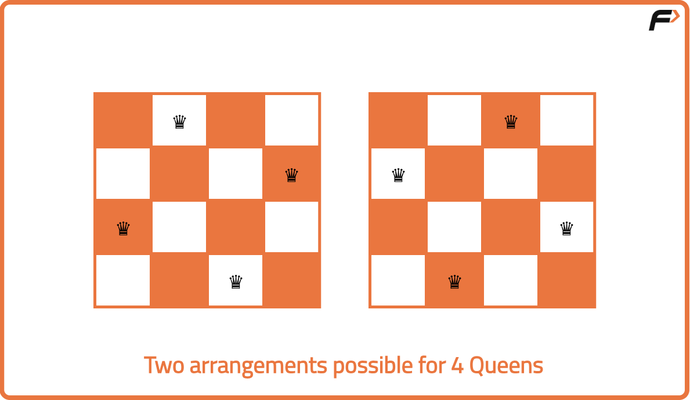
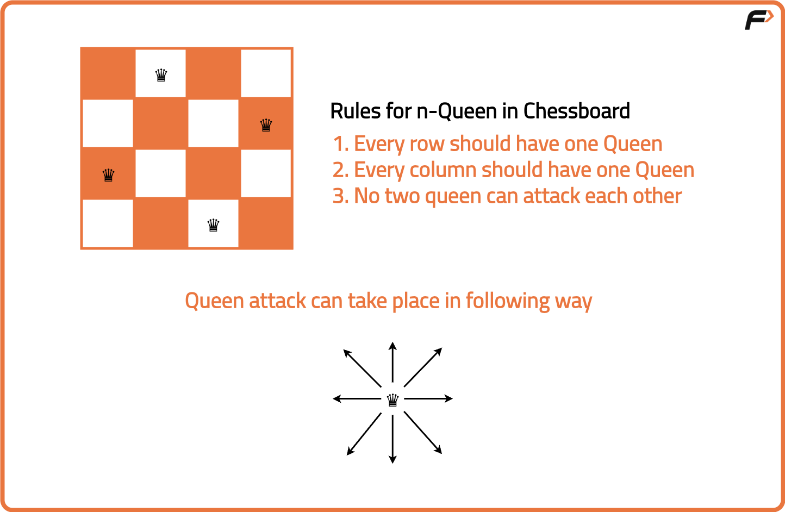
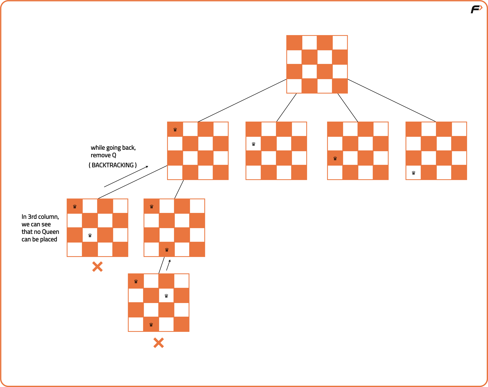
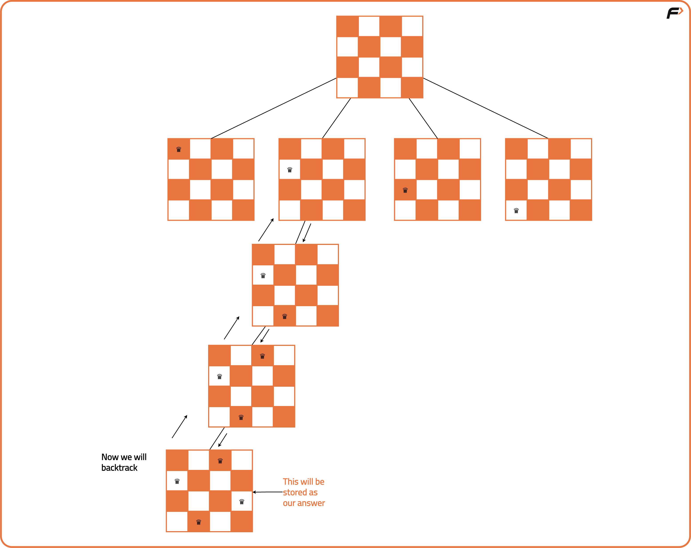
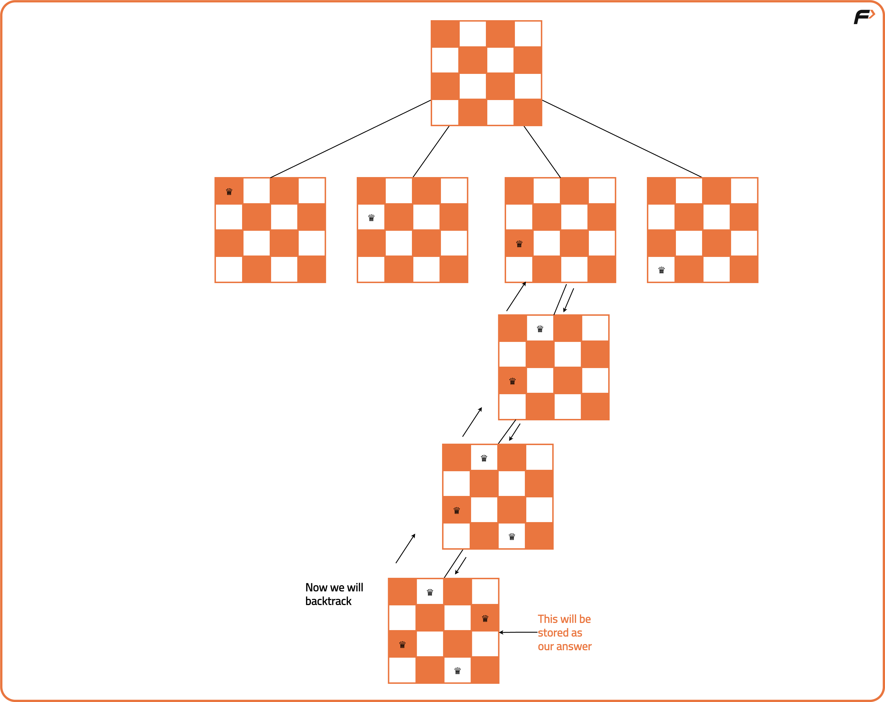
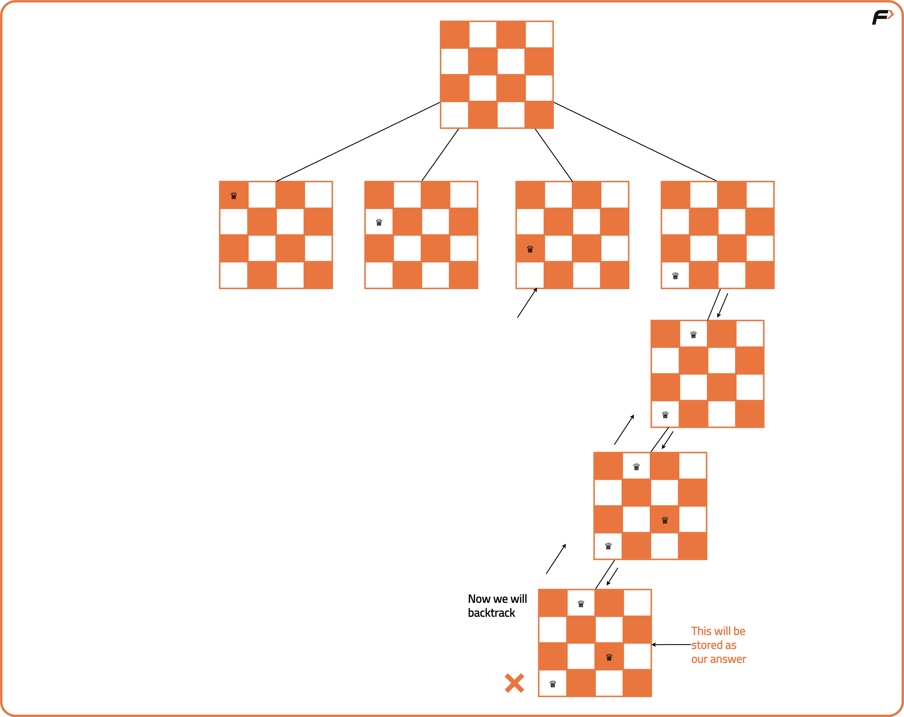
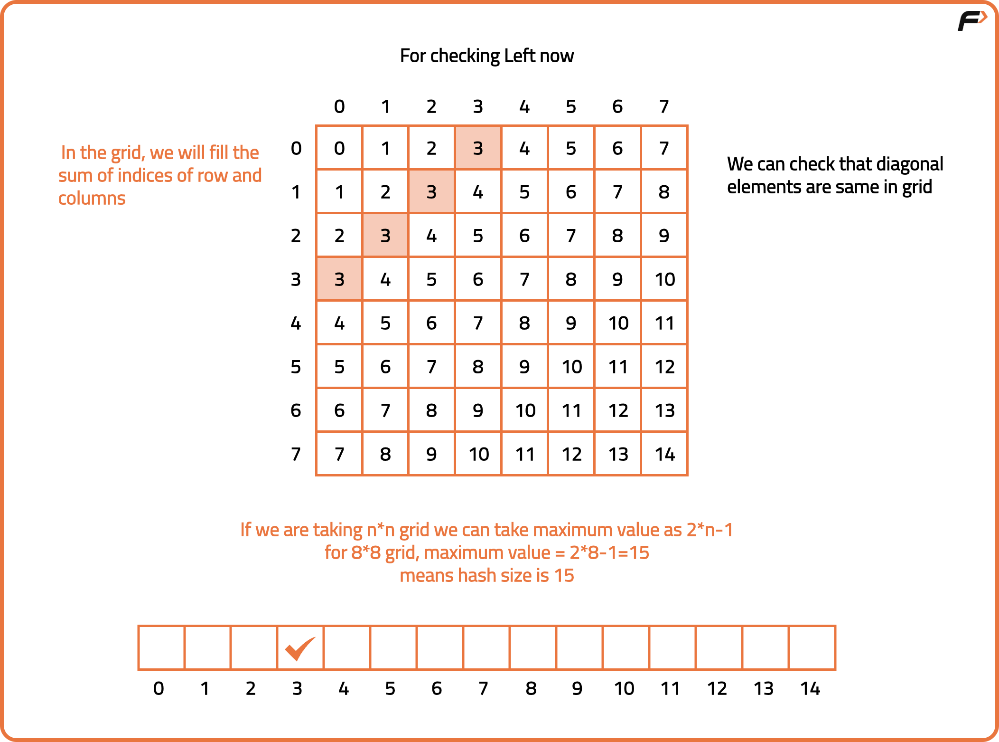
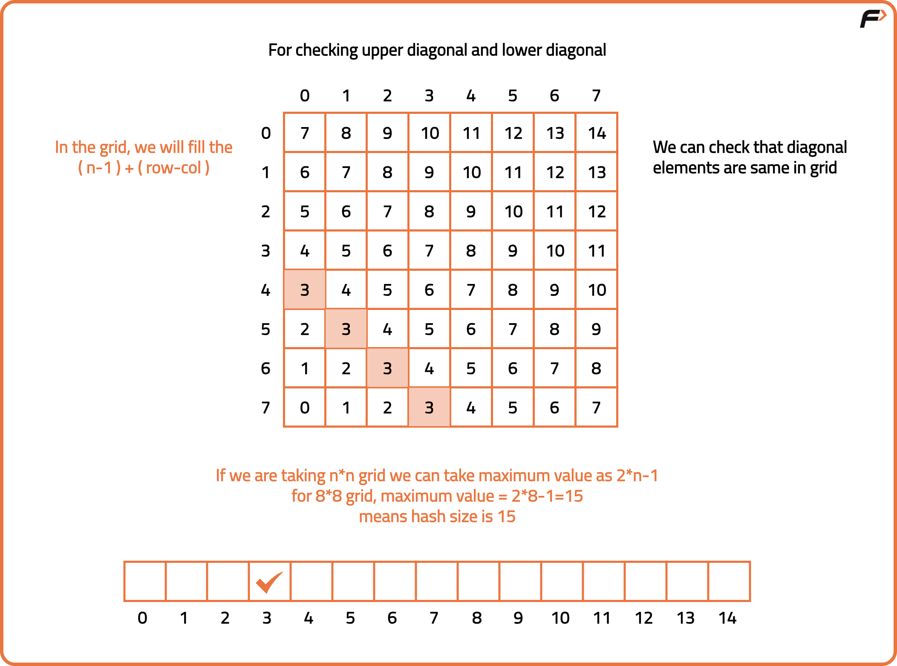

N Queen Problem | Return all Distinct Solutions to the N-Queens Puzzle
Problem Statement: The n-queens is the problem of placing n queens on n × n chessboard such that no two queens can attack each other. Given an integer n, return all distinct solutions to the n -queens puzzle. Each solution contains a distinct boards configuration of the queen's placement, where ‘Q’ and ‘.’ indicate queen and empty space respectively.
Examples
Input: N = 4 Output: [[".Q..","...Q","Q...","..Q."],["..Q.","Q...","...Q",".Q.."]] Explanation: There exist two distinct solutions to the 4-queens puzzle as shown below
Input : N = 1 Output: [["Q"]] Explanation : There is only one way to place 1 queen on 1x1 chessboard.
Disclaimer: Here is the practice link to help you assess your knowledge better. It's highly recommend trying to solve it before looking at the solution.
Brute-Force Approach
Algorithm
Let us first understand how can we place queens in a chessboard so that no queen can attack any other queen.
If a position is safe, we place the queen and recursively attempt to place queens in the next column. If we reach a point where no row in a column is safe, we backtrack and remove the previously placed queen and try a different row. This continues until all queens are placed successfully or all configurations have been tried.

We use backtracking to explore all possible board configurations by placing one queen per column. For each column, we try placing a queen in every row, checking whether the position is safe (i.e., not attacked by any queen placed in previous columns).If a position is safe, we place the queen and recursively attempt to place queens in the next column. If we reach a point where no row in a column is safe, we backtrack and remove the previously placed queen and try a different row. This continues until all queens are placed successfully or all configurations have been tried.
- Start with the first column and attempt to place a queen in each row one by one.
- For each position, check if placing a queen there is safe from attacks (no same row or upper-left or lower-left diagonal threats).
- If it’s safe, place the queen and move to the next column recursively.
- If placing the queen leads to a dead-end (no safe position in next column), backtrack by removing the queen and try the next row in the current column.
- Repeat this process until a valid configuration is found or all possibilities are exhausted.
- Store or print the board configuration when N queens are successfully placed.




Code
#include <bits/stdc++.h>
using namespace std;
class Solution {
public:
// Function to check if placing a queen at (row, col) is safe
bool isSafe(int row, int col, vector<vector<char>> &board, int n) {
// Check all columns to the left in the same row
for (int j = 0; j < col; j++) {
if (board[row][j] == 'Q') return false;
}
// Check upper-left diagonal
for (int i = row, j = col; i >= 0 && j >= 0; i--, j--) {
if (board[i][j] == 'Q') return false;
}
// Check lower-left diagonal
for (int i = row, j = col; i < n && j >= 0; i++, j--) {
if (board[i][j] == 'Q') return false;
}
// Return true if no attack is possible
return true;
}
// Backtracking function to place queens column by column
void solve(int col, vector<vector<char>> &board,
vector<vector<string>> &ans, int n) {
// If all columns are filled, add current board to answer
if (col == n) {
vector<string> temp;
for (int i = 0; i < n; i++) {
// Convert row vector to string
string row(board[i].begin(), board[i].end());
temp.push_back(row);
}
ans.push_back(temp);
return;
}
// Try placing queen in all rows of current column
for (int row = 0; row < n; row++) {
// Place queen only if safe
if (isSafe(row, col, board, n)) {
// Place queen
board[row][col] = 'Q';
// Recurse for next column
solve(col + 1, board, ans, n);
// Backtrack and remove queen
board[row][col] = '.';
}
}
}
// Main function to call backtracking
vector<vector<string>> solveNQueens(int n) {
vector<vector<string>> ans;
// Create empty board of size n x n
vector<vector<char>> board(n, vector<char>(n, '.'));
// Start backtracking from column 0
solve(0, board, ans, n);
return ans;
}
};
int main() {
Solution obj;
// Set board size
int n = 4;
// Get all solutions
vector<vector<string>> res = obj.solveNQueens(n);
// Print each board
for (auto &board : res) {
for (auto &row : board) {
cout << row << "\n";
}
cout << "\n";
}
return 0;
}
Complexity Analysis
Time Complexity: O(N!*N), we try all possible permutations of placing the queens and check for safety.Space Complexity: O(N^2 + N), additional space used for storing distinct boards and stack space.
Optimal Approach
Algorithm
Instead of checking every row, column, and diagonal every time we place a queen (which is slow), we use precomputed boolean arrays to instantly check if a queen can be safely placed. Each array acts like a hash for fast lookup. A row array keeps track of which rows already have a queen. Two diagonal arrays (lowerDiagonal and upperDiagonal) keep track of the diagonals that are under attack. This avoids repetitive scanning and makes the backtracking highly efficient.
- Initialize three boolean arrays, one for rows, one for lower diagonals, and one for upper diagonals.
- Start placing queens column by column from left to right using backtracking.
- For a given column, iterate through all rows and check if placing a queen at (row, col) is safe using the hash arrays.
- To check if placing a queen is safe, ensure the corresponding row, lower diagonal (row + col), and upper diagonal (n - 1 + col - row) are not already marked as attacked in the boolean arrays.
- If safe, place the queen and mark the corresponding row and diagonals as attacked.
- Recurse to the next column to place the next queen.
- When backtracking, remove the queen and unmark the row and diagonals to try other configurations.
- Count or store the solution if all columns are successfully filled with safe placements.


Code
#include <bits/stdc++.h>
using namespace std;
class Solution {
public:
// Function to solve N-Queens problem
void solve(int col, vector<string>& board, int n,
vector<int>& leftRow, vector<int>& upperDiagonal, vector<int>& lowerDiagonal,
vector<vector<string>>& ans) {
// If all queens are placed
if (col == n) {
ans.push_back(board);
return;
}
// Iterate through all rows
for (int row = 0; row < n; row++) {
// Check if it's safe to place the queen
if (leftRow[row] == 0 && lowerDiagonal[row + col] == 0 &&
upperDiagonal[n - 1 + col - row] == 0) {
// Place the queen
board[row][col] = 'Q';
// Mark the row and diagonals
leftRow[row] = 1;
lowerDiagonal[row + col] = 1;
upperDiagonal[n - 1 + col - row] = 1;
// Recurse to next column
solve(col + 1, board, n, leftRow, upperDiagonal, lowerDiagonal, ans);
// Backtrack and remove the queen
board[row][col] = '.';
leftRow[row] = 0;
lowerDiagonal[row + col] = 0;
upperDiagonal[n - 1 + col - row] = 0;
}
}
}
// Main function
vector<vector<string>> solveNQueens(int n) {
vector<vector<string>> ans;
vector<string> board(n, string(n, '.'));
vector<int> leftRow(n, 0), upperDiagonal(2 * n - 1, 0), lowerDiagonal(2 * n - 1, 0);
solve(0, board, n, leftRow, upperDiagonal, lowerDiagonal, ans);
return ans;
}
};
int main() {
Solution obj;
int n = 4;
vector<vector<string>> res = obj.solveNQueens(n);
for (auto& board : res) {
for (auto& row : board) {
cout << row << "\n";
}
cout << "\n";
}
return 0;
}
Complexity Analysis
Time Complexity: O(N!), we try all possible permutations of placing the queens.Space Complexity: O(N), three boolean arrays are stored to check for safety.